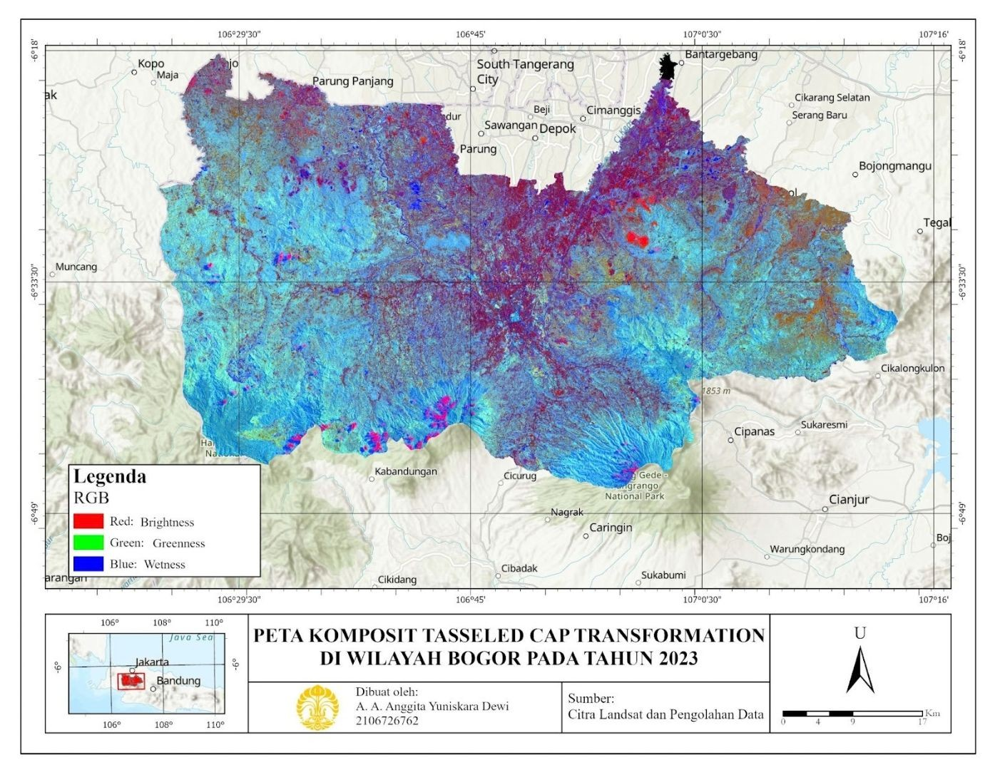
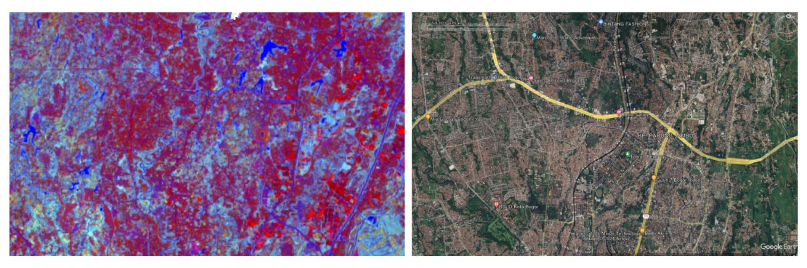
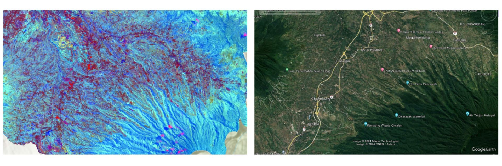

Pemanfaatan Tasseled Cap Transformation untuk Pemantauan Tutupan Lahan di Wilayah Bogor Tahun 2023
Latar belakang
Pertumbuhan penduduk selalu diikuti naiknya kebutuhan lahan untuk permukiman, industri, dan pertanian. Akibatnya, hutan, lahan terbuka, dan vegetasi alami perlahan berubah fungsi. Bogor adalah salah satu contohnya. Sebagai wilayah dengan pertumbuhan penduduk yang pesat, pola penggunaan lahannya berubah signifikan akibat ekspansi perkotaan, pembangunan infrastruktur, dan intensifikasi pertanian. Karena itu, tutupan lahannya perlu dipantau secara berkala agar pembangunan tetap berjalan seimbang dengan kelestarian lingkungan.
Untuk wilayah seluas Bogor, pemantauan di lapangan tentu memakan waktu dan biaya, sehingga penginderaan jauh menjadi pilihan yang lebih efisien. Salah satu metodenya adalah Tasseled Cap Transformation (TCT), yang meringkas band-band citra satelit menjadi tiga komponen yang mudah dibaca: brightness yang menggambarkan kecerahan permukaan seperti lahan terbangun dan lahan terbuka, greenness yang menggambarkan kerapatan vegetasi, dan wetness yang menggambarkan kelembaban tanah maupun vegetasi. Ketiga komponen ini saling melengkapi untuk membedakan jenis tutupan lahan. Proyek ini menerapkan TCT pada citra Landsat 8 untuk memetakan kondisi tutupan lahan di Kabupaten dan Kota Bogor.
Data yang digunakan
| Data | Format Data | Jenis Data | Sumber |
|---|---|---|---|
| Citra Landsat 8 (6 September 2023), band 2–7 | Raster | Sekunder | Google Earth Engine |
| Batas administrasi Kabupaten dan Kota Bogor | Shapefile | Sekunder | Ina-Geoportal |
| Citra pembanding (utara dan selatan Bogor) | Citra satelit | Sekunder | Google Earth Pro |
Metode
Pengolahan dilakukan di Google Earth Engine (GEE), kemudian tata letak peta disusun di ArcGIS Pro. Tahapannya:
- Mengunggah shapefile batas Kabupaten dan Kota Bogor ke GEE sebagai wilayah kajian (ROI).
- Mendefinisikan koefisien Tasseled Cap Landsat dalam bentuk array 6×6.
- Memanggil citra Landsat 8 dan memilih band B2, B3, B4, B5, B6, dan B7.
- Mengubah citra menjadi array image 1-D dan 2-D per piksel (6×1).
- Melakukan perkalian matriks antara koefisien dan array piksel, sehingga menghasilkan komponen brightness, greenness, dan wetness.
- Memotong citra sesuai batas administrasi, lalu mengekspor hasilnya ke Google Drive.
- Menyusun layout peta di ArcGIS Pro sesuai kaidah kartografi. Peta komposit memakai kombinasi RGB: merah = brightness, hijau = greenness, biru = wetness.
Hasil
Peta komposit menunjukkan pola yang jelas: warna biru mendominasi bagian selatan dan warna merah mendominasi bagian utara. Biru menandakan wilayah yang cenderung lembab dan bervegetasi, sedangkan merah menandakan wilayah yang cenderung kering dengan vegetasi minim.

Bagian utara berbatasan langsung dengan kota padat penduduk seperti Tangerang Selatan, Depok, dan Bekasi, sehingga banyak permukiman tumbuh di pinggiran dan mengurangi vegetasi. Bagian selatan berbatasan dengan Kabupaten Sukabumi yang berada di dataran tinggi dekat pegunungan, sehingga vegetasinya masih banyak dan wilayahnya lebih lembab. Pola ini sesuai dengan citra pembanding dari Google Earth Pro.


Masing-masing komponen juga dipetakan terpisah:
| Komponen | Rentang nilai | Interpretasi |
|---|---|---|
| Brightness | 0,10 – 2,20 | Nilai tinggi menandakan permukaan yang memantulkan banyak cahaya, seperti lahan terbangun dan tanah terbuka. Nilai rendah, yaitu bagian selatan, menandakan vegetasi yang lebih rapat. Bagian utara tampak lebih gelap pada peta, yang menandakan vegetasinya minim. |
| Greenness | -0,25 – 0,32 | Semakin kuning, vegetasi semakin subur. Kuning dominan di selatan, sedangkan hijau (vegetasi minim atau lahan terbangun) dominan di utara. |
| Wetness | -1,13 – 0,14 | Semakin biru gelap, wilayah semakin lembab. Nilai tertinggi ada di selatan yang berelevasi lebih tinggi dan bervegetasi, nilai terendah ada di utara yang merupakan area permukiman. |
Kesimpulan
Tutupan lahan di wilayah Bogor cenderung seimbang antara vegetasi dan non-vegetasi. Bagian selatan Kabupaten Bogor masih didominasi vegetasi karena berada di dataran tinggi dekat pegunungan dan relatif sulit dijadikan permukiman. Bagian utara sudah banyak didominasi lahan non-vegetasi seperti lahan terbangun dan lahan terbuka, terutama akibat limpahan permukiman dari Depok, Bekasi, dan Tangerang Selatan. Tasseled Cap Transformation terbukti efektif memetakan pola ini lewat tiga komponennya, dan dapat dimanfaatkan untuk perencanaan penggunaan lahan berkelanjutan, identifikasi risiko bencana seperti banjir dan longsor, serta pemantauan kesehatan hutan.
← View other projects